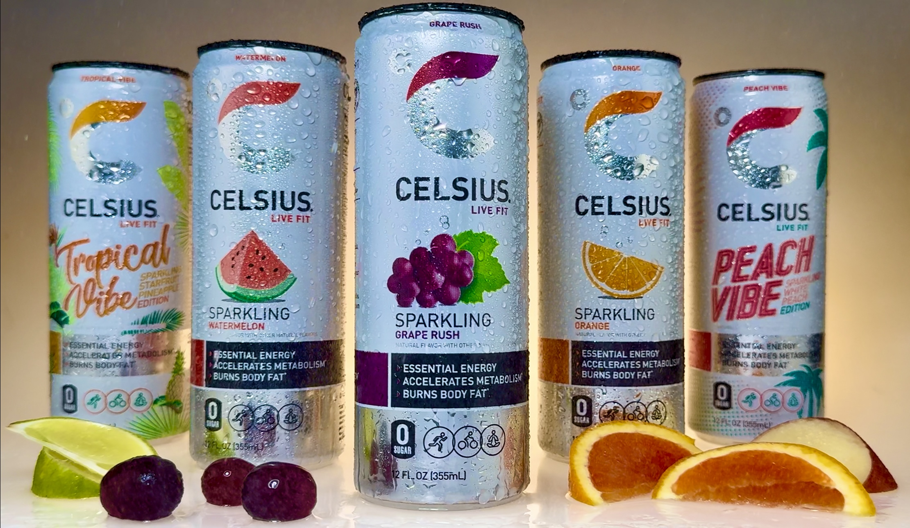

Celsius Motion Ad
Two class video projects built around the Celsius brand: a short animated product spot made for a motion graphics assignment, and a 30-second spot filmed and edited for a cinematography class, plus a set of staged product stills.
VIDEO 01 · MOTION GRAPHICS
Animated Product Spot
A short animated Celsius spot built for a motion graphics assignment. The can and branding are animated rather than filmed.
WATCH ON YOUTUBE ↗VIDEO 02 · CINEMATOGRAPHY
30-Second Filmed Spot
A longer spot filmed for a cinematography class: slow-motion fruit, condensation shots, and product footage cut to commercial pacing.
WATCH ON YOUTUBE ↗PRODUCT STILLS · CLICK TO ENLARGE
Fruit Shot
Celsius flavors staged with fruit and warm lighting.
Angled Shot
A closer angle focused on the condensation on the can.

Hero Shot
A product portrait of the label design and branding.